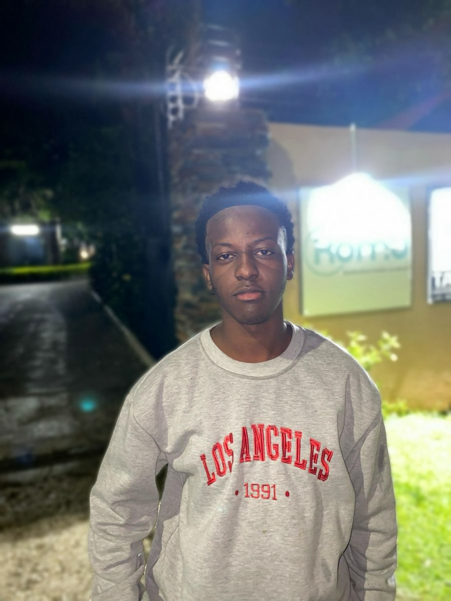
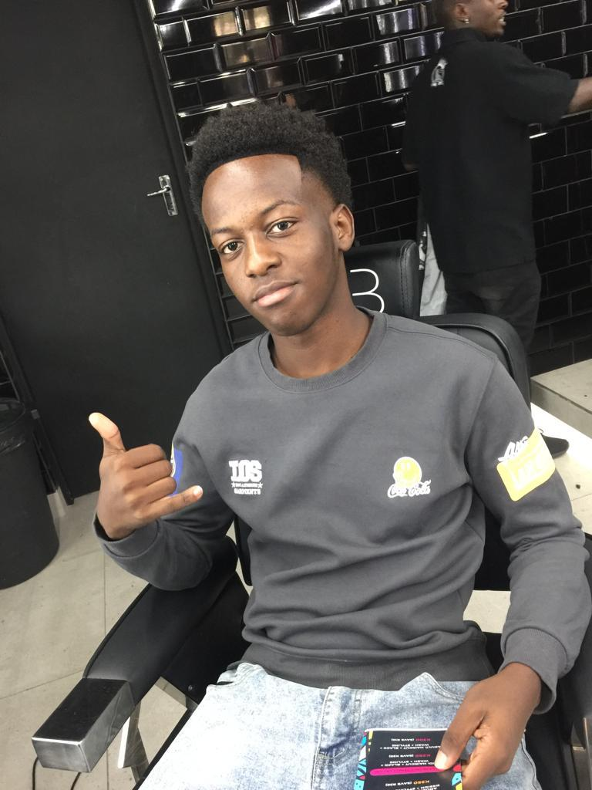

This Portfolio Website
Built with semantic HTML5, external CSS and plain JavaScript, then deployed to Render through GitHub.
Data Science undergraduate · Mulungushi University, Kabwe
I am learning to build the pipelines and systems that move and store data. This site shows what I am working on and what I have learned in ICT251 Web Technologies.
Currently learning SQL, Linux and Git — Phase 0 of my data engineering roadmap
View My ProjectsHi, I am Samuel Siame, an undergraduate student at Mulungushi University in Kabwe, Zambia, studying Data Science. My main interest is data engineering, which means building the pipelines and systems that move and store data so that others can analyse it. I am taking ICT251 because I want to understand how websites are built, so that I can one day create simple web dashboards that present the data my pipelines produce. Outside class, I enjoy gaming, football and movies.
Examples of what I have learned through coursework and my own projects. Search or filter by skill.
Built with semantic HTML5, external CSS and plain JavaScript, then deployed to Render through GitHub.
A Flask and SQLite prototype for checking product authenticity and tracking counterfeit alcohol and tobacco in Zambia.
A geospatial concept that lets buyers and lenders check a land parcel's boundaries and status before a sale, using a PostGIS database.
Desktop user interfaces built in Advanced Java, covering layouts, event handling and build tools.
My goal is to become a data engineer: someone who moves data reliably from where it is produced to where it creates value. Tools change every few years, so I am building strong fundamentals first and adding tools on top of them. This is my long-term roadmap, phase by phase.
| Phase | When | What I will learn | Milestone project |
|---|---|---|---|
| 0. Foundations Current phase | Now (months 1–4) | Python fundamentals, SQL joins, aggregations and window functions, the Linux command line, Git, and how computers store and process data | Write Python and SQL confidently without looking up basic syntax |
| 1. Core data engineering | Months 4–12 | Advanced SQL and query plans, database internals, data modelling (star schemas), Python for data (APIs, JSON, CSV, Parquet), Airflow, Docker and AWS basics | An end-to-end pipeline that pulls public data from an API, transforms it, loads it into a warehouse and is fully documented |
| 2. Scale and distributed systems | Years 1–2 | Distributed systems, Apache Spark, cloud data warehouses, lakehouse formats (Iceberg, Delta Lake), Kafka, and testing and CI/CD for pipelines | A tested and monitored pipeline that processes millions of rows |
| 3. Production engineering and MLOps | Years 2–3 | Streaming, data quality and observability, data security and governance, Kubernetes, and MLOps basics such as MLflow | A reusable platform component, such as a data quality framework |
| 4. Senior and staff level | Years 3–5 and beyond | Data architecture at scale, data infrastructure for AI and ML, cost optimisation, mentoring and writing about what I build | Lead the design of a data platform used by several teams |


Summary: In this short video, I introduce myself and state my degree programme.
Description: A brief recording introducing myself.
Browser demonstration only — no message is sent. The form checks your input and shows a preview on this page.